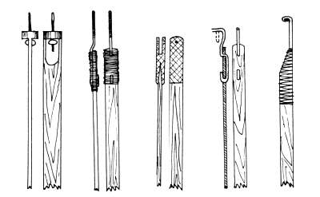
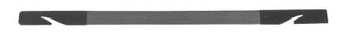
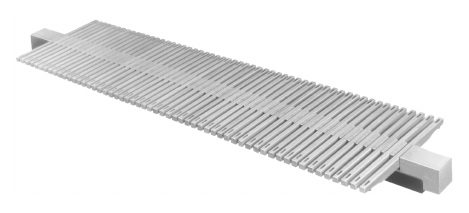
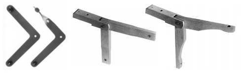
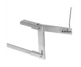
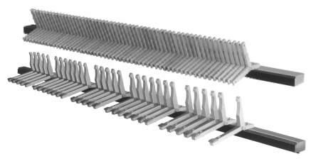

Nejčastěji používanými elementy mechanické traktury
jsou abstrakty (táhla), úhelníky, páky, rotační tyče (hřídele) a bodce. Abstrakty jsou základními prvky mechanické traktury, spojují navzájem všechny ostatní používané mechanické prvky. Nejčastěji jsou vyráběny z tenkých dřevěných lišt (používá se dýha o tloušťce od jednoho milimetru z tvrdého dřeva - cedr, buk, dub, v našich podmínkach i z rezonančního smrkového dřeva) nebo z kovu (mosazné či bronzové dráty či plíšek, ušlechtilá ocel). Konce abstraktů jsou vždy upraveny pro připojení k dalším součástem traktury - zpravidla závěsem, háčkem nebo šroubkem pro připojení s možností regulace napětí (viz obrázky níže). Na abstrakty jsou kladeny značné nároky, musí vykazovat vysokou pevnost a minimální pružnost (délka abstraktů u velkých varhan se může pohybovat mezi deseti až dvaceti metry, při překonávání tlaku vzduchu na ventil by příliš pružný abstrakt způsoboval nepříjemné „pérování“ klávesy). Současně musí být velmi lehké (velké hmoty by díky značným momentům setrvačnosti znemožňovaly rychlou hru či repetici) a minimálně měnit své rozměry při změnách teplot a vlhkosti v nástroji (většina nástrojů stojí v chrámových prostorách, kde se teploty mění během roku až o čtyřicet stupňů a vlhkost o 60 a více %). |

Různá zakončení dřevěných abstraktů.

Kovový abstrakt.
Nejjednodušším příkladem
je jednoramenné vahadlo ve tvaru T. Dva abstrakty připojené k jeho ramenům
se pohybují ve stejném směru. Tohoto uspořádání se používá k podepření
dlouhých vodorovných abstraktů, které by se jinak vlastní vahou prověšovaly
(někteří varhanáři používají místo vahadel vedení dlouhých abstraktů po
podpěrných kladkách). |
|
Podobně pracuje jednoramenná páka na tomto obrázku. Směr
přenášeného pohybu zůstává zachován, díky připojení abstraktů k páce v
různé vzdálenosti od osy otáčení se však současně mění dráha pohybu a
ovládací síla - abstrakt směřující vzhůru se bude pohybovat po menší dráze,
ale s větší silou. |
Zvláštním případem jednoramenné páky může být hřídel.
Opěrným bodem rotace je osa hřídele, osy obou pohybujících se abstraktů
jsou rovnoběžné. V tomto případě se tedy nevyužívá hřídel ke změně směru
pohybu, jen k jeho rovnoběžnému posunu podél osy hřídele. Pohledem kolem
osy se tedy hřídel jeví jako jednoramenná páka, pokud bude délka ramének
nestejně veliká, bude se navíc jednat o páku s určitým převodovým poměrem. |
Druhým typem páky, využívané při stavbě varhan jsou
dvouramenné (vahadlové, přezmenné) páky. |
|
Nejčastějším případem dvouramenné páky je vahadlová páka
se stejnými rameny. Tento mechanismus převádí pohyb ve směru obráceném
k působení síly, táhne-li tedy abstrakt na jedné straně páky směrem dolů,
druhý je tažen směrem nahoru a obráceně. Také tato páka může pracovat
jako převod, v tomto případě ale musí mít různé délky ramen. |

Sada pák s montážní lištou a příslušenstvím (Laukhuff).
|
Ve varhanách se používají rovněž konstrukce složené s několika
navzájem svázaných pák. Jeden z příkladů je uveden zde - dvě dvouramenné
páky jsou navzájem bezprostředně mechanicky svázány svými volnými konci.
Oba abstrakty - jak „vstupní“, tak i výstupní se pohybují stejným směrem,
zde dolů. Tato konstrukce umožňuje přesun síly v podélném směru na vzdálenost
rovnou součtu délek spojených pák. |
Zde jsou použity rovněž dvě páky, mechanismus
se ale liší od předchozího použitím palce - tlačné tyčky pro přenesení
pohybu mezi volnými konci pák. Navíc použité páky nemají stejně dlouhá
ramena a mechanismus tak plní zároveň i funkci převodu. Tato soustava
převádí pohyb ve stejném směru, jako má vstupní síla a používá se nejčastěji
k obejití překážek, vyplývajících z konstrukce varhan (zpravidla nosné
konstrukce vzdušnic, varhanní skříně, ale také stavebních prvků budovy
- trámů v podlaze apod.). |
Při popisu různých typů pák, používaných ve varhanách
nesmíme zapomenout na fakt, že základní pákou varhan je klávesa (a to
dokonce bez ohledu na typ a provedení navazující traktury). V případě
nástroje s mechanickou trakturou je klávesa (první páka v celém mechanismu
traktury) výchozím prvkem, od kterého se šíří mechanický pohyb až k ventilu
na konci. |
Dvouramenná klávesa (tedy
dvouramenná páka) bezprostředně spojená s další dvouramennou pákou je
příkladem mechanismu, který převádí pohyb ve stejném směru, jako je směr
působení síly na klávesu. Tento pohyb je navíc vodorovně přesunut na vzdálenost,
rovnou součtu délek obou spolupracujících pák. |
Spojení mezi navazujícími pákami může
být samozřejmě provedeno i pomocí dodatečných součástí. Na tomto obrázku
je jako element, který přenáší pohyb klávesy na pohyb páky, která pak
působí na další elementy traktury, využit palec (tlačná tyčka, bodec).
I v tomto případě je směr pohybu prvního abstraktu shodný se směrem pohybu
klávesy po stisknutí. Využití tohoto mechanismu umožňuje opět obejít mechanické
překážky, které se nacházejí na dráze pohybu v konstrukci hracího stolu
(nosné prvky, mechaniku dalšího manuálu či spojek apod.). |
|
Varhanáři často využívaná obměna dvouramenné páky je úhelník.
Jedná se o páku, jejiž dvě ramena jsou vůči sobě pootočena v pravém úhlu.
Úhelník mění směr pohybu z vodorovného na svislý a obráceně (někdy se
používají i ležaté úhelníky pro pravoúhlý převod z podélného na příčný
směr). Úhelníky nalezneme ve varhanách v mnoha různých provedeních, mohou
být dřevěné i kovové s různou úpravou konců pák pro připevnění k abstraktům. |

|  |
I přes značnou různorodost provedení je role úhelníků v traktuře
stále stejná - převádějí pohyb ve dvou navzájem kolmých směrech. Úhelník
je upevněn na osičce, kolem které se volně otáčí. Na jeho koncích jsou
přímo připevněny abstrakty, pohybující se ve směru svých podélných os. |
Úhelníky jsou často montovány v celých skupinách,
například jako mechanismus, převádějící pohyb z celé klaviatury, nebo
ovládající celou řadu ventilů apod: |

Úhelník, stejně jako ostatní páky se používá v konstrukci složitějších mechanismů.
|
Tato animace představuje mechanismus, složený z jednoramenné
klávesy (klávesa je tvořená jednoramennou pákou s opěrou na opačném konci,
než je místo působení síly), která je přes drátěné táhlo spojena s dvouramenným
úhelníkem a abstraktem. Tento mechanismus mění směr pohybu ze svislého
(stisk klávesy prstem varhaníka) na vodorovný. |
Další možné řešení rovněž
využívá úhelník, zde použitá klávesa je ale dvouramennou pákou a její
volný konec působí bezprostředně na rameno úhelníku. Změna směru pohybu
je ale shodná s předchozím příkladem (ze svislého na klávese na vodorovný
na abstraktu). |
Na dráze přenosu pohybu od klávesy až po odpovídající
ventil ve vzdušnici nalezneme většinou několik úhelníků. Nejčastěji je
to u větších nástrojů (s více manuály a pedálem), jejichž vzdušnice, spojené
s jednotlivými manuály či pedálem jsou umístěny v různých vzdálenostech
od hracího stolu - v různých směrech, výše, níže nebo dokonce v různých
skříních. V těchto případech je při vedení abstraktů a obcházení překážek
nutná i vícenásobná změna směru. Následující animace ukazují možné využití
úhelníků při konstrukci mechanické traktury (abstrakty jsou znázorněny
jen schematicky modrou barvou). |
Obraťme pozornost na funkci klávesy v předchozích
animacích - v prvním případě pracuje jako dvouramenná páka, ve druhém
pak jako páka jednoramenná. Přesto jsou si oba typy kláves co do funkce
rovnocenné. Ramena dvouramenné páky (a tedy i úhelníku) mohou být vsazena na rotační tyči - hřídeli. V tomto případě je pohyb převáděn pod pravým úhlem a současně přesunut podél osy hřídele na vzdálenost rovnou vzdálenosti ramének na hřídeli. |
Na dalších stránkách je popsáno použití těchto komponentů v tónové a rejstříkové traktuře a ve spojkách. |
Poznámka: Tato stránka je součástí Anatomie varhan ®, © Ing. Petr Bernat. Všechny animace © Konrad Zacharski